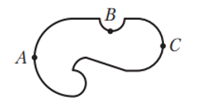
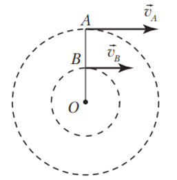
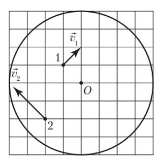
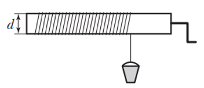
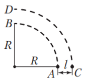
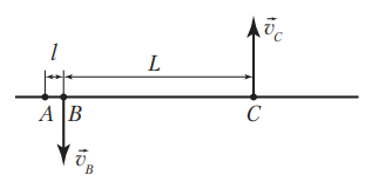

Материальная точка вращается по окружности радиусом $R = 60\text{ см}$ с угловой скоростью, модуль которой $\omega = 2{,}5\text{ }\frac{\text{рад}}{\text{с}}$. Если модуль её линейной скорости $v$ постоянный, то он равен:
Для нахождения модуля линейной скорости $v$ воспользуемся связью между линейной и угловой скоростями:
Если период обращения точек обода колеса уменьшить в $n = 3$ раза, то модуль центростремительного ускорения точек:
Формула ускорения:
$$a = \frac{v^2}{R}$$
Связь скорости с периодом:
Линейная скорость $v$ — это длина окружности, деленная на период $T$:
$$v = \frac{2\pi R}{T}$$
Связь ускорения $a$ с периодом $T$ и радиусом $R$ имеет вид:
$$a = \frac{4\pi^2 R}{T^2}$$
Период уменьшили в 3 раза $\left(T' = \frac{T}{3}\right)$.
Знаменатель уменьшится в $3^2 = \mathbf{9\text{ раз}}$.
Дробь и само ускорение увеличатся в 9 раз.
Ответ: вариант 4 (увеличится в 9 раз).
Задача 4
Если в верхней точке выпуклого моста радиусом $R = 40\text{ м}$ модуль центростремительного ускорения автомобиля $a = 8{,}1\text{ }\frac{\text{м}}{\text{с}^2}$, то модуль скорости $v$ движения автомобиля в верхней точке моста равен:
Из формулы $a = \frac{v^2}{R}$ найдем модуль скорости движения автомобиля:
На рисунке 21 показана схема гоночной автотрассы. Модули линейных скоростей движения автомобиля в точках $A$, $B$ и $C$ одинаковы. Модули ускорений автомобиля в этих точках связаны соотношением:

Рис. 21
При постоянном модуле линейной скорости движения автомобиля модуль центростремительного ускорения обратно пропорционален радиусу окружности. Поэтому $a_A < a_C < a_B$.
Ответ: вариант 4 ($a_A < a_C < a_B$).
Задача 6
Две материальные точки движутся по окружностям диаметрами $d_1$ и $d_2 = 4d_1$. Если периоды вращения точек равны, то отношение модулей центростремительных ускорений точек $\frac{a_1}{a_2}$ равно:
1. Формула ускорения через период:
Центростремительное ускорение связано с периодом обращения $T$ и диаметром окружности $d$ формулой:
$$a = \omega^2 R = \left(\frac{2\pi}{T}\right)^2 \frac{d}{2} = \frac{2\pi^2 d}{T^2}$$
2. Нахождение отношения:
Так как периоды вращения точек одинаковы ($T_1 = T_2$), то ускорение прямо пропорционально диаметру окружности:
$$\frac{a_1}{a_2} = \frac{d_1}{d_2}$$
По условию $d_2 = 4d_1$, следовательно:
$$\frac{a_1}{a_2} = \frac{d_1}{4d_1} = 0{,}25$$
Ответ: вариант 1 (0,25).
Задача 7
Радиус равномерно вращающегося колеса комбайна в $n = 2$ раза больше радиуса равномерно вращающегося колеса трактора. Если частота вращения колеса комбайна в $k = 4$ раза меньше частоты вращения колеса трактора, то отношение модулей линейных скоростей $\frac{v_{\text{т}}}{v_{\text{к}}}$ крайних точек колеса трактора ($v_{\text{т}}$) и колеса комбайна ($v_{\text{к}}$) относительно осей этих колес равно:
Сверло дрели вращается с угловой скоростью $\omega = 300\text{ }\frac{\text{рад}}{\text{с}}$. Если модуль линейной скорости точек сверла, движущихся с максимальной скоростью, $v_{\text{max}} = 72\text{ }\frac{\text{м}}{\text{мин}}$, то модуль центростремительного ускорения $a_{\text{max}}$ этих точек равен:
Модули линейных скоростей точек $A$ и $B$ (рис. 22), расположенных на поверхности горизонтального диска, вращающегося с постоянной частотой вокруг вертикальной оси, проходящей через центр диска, $v_A = 9{,}42\text{ }\frac{\text{м}}{\text{с}}$ и $v_B = 6{,}28\text{ }\frac{\text{м}}{\text{с}}$ соответственно. Если частота вращения диска $\nu = 2{,}0\text{ с}^{-1}$, то расстояние $AB$ равно:

Рис. 22
Линейная скорость точки на вращающемся диске связана с частотой вращения $\nu$ и радиусом $R$ формулой:
Материальная точка равномерно вращается по окружности, радиус которой $R = 48\text{ см}$. Если направление линейной скорости точки изменяется на противоположное через минимальный промежуток времени $\Delta t_1 = 2{,}7\text{ с}$, то модуль перемещения $\Delta r$ точки за промежуток времени $\Delta t_2 = 1{,}8\text{ с}$ равен:
Линейная скорость материальной точки, движущейся по окружности, изменяет направление на противоположное за половину периода. Поэтому период $T = 2\Delta t_1 = 5{,}4\text{ с}$. Время $\Delta t_2$ соответствует $\frac{1}{3}T$. Отсюда модуль перемещения $\Delta r = R = 48\text{ см}$.
Ответ: вариант 3 (48 см).
Задача 11
Диск равномерно вращается вокруг оси, перпендикулярной плоскости диска и проходящей через его центр $O$ (рис. 23). Если модуль линейной скорости точки 1 $v_1 = 2{,}4\text{ }\frac{\text{м}}{\text{с}}$, то модуль линейной скорости $v_2$ точки 2 равен:

Рис. 23
Воспользуемся «клеточным масштабом». Радиус вращения второй точки в два раза больше радиуса вращения первой точки: $\frac{r_2}{r_1} = 2$.
Угол поворота $\varphi$ диска радиусом $R = 80\text{ см}$, определяется по закону $\varphi = At$, где $A = 2{,}0\text{ }\frac{\text{рад}}{\text{с}}$. Модуль центростремительного ускорения $a$ точек на краю диска равен:
Из закона изменения угла поворота $\varphi = At$ следует, что угловая скорость $\omega$ постоянна и равна коэффициенту $A$:
$$\omega = A = 2{,}0\text{ }\frac{\text{рад}}{\text{с}}$$
Модуль центростремительного ускорения $a$ вычисляется по формуле:
За один полный оборот точка на ободе шкива проходит путь, равный длине окружности: $S = 2\pi R$ (где $R$ — радиус). Время одного оборота — это период $T$.
$$v = \frac{2\pi R}{T}$$
Частота вращения — это величина, обратная периоду $\left(\nu = \frac{1}{T}\right)$. Подставим её в формулу скорости:
$$v = 2\pi R\nu$$
Линейные скорости точек на ободе обоих шкивов равны ($v_1 = v_2$). Так как линейная скорость связана с диаметром и частотой формулой $v = \pi \cdot d \cdot \nu$, получаем соотношение:
Вертолет без начальной скорости начинает снижаться вертикально вниз с ускорением, модуль которого $a = 0{,}20\text{ }\frac{\text{м}}{\text{с}^2}$. Если лопасти винта, вращаясь со средней частотой $\langle \nu \rangle = 5{,}0\text{ }\frac{\text{об}}{\text{с}}$, совершили за время спуска $N = 100$ оборотов вокруг оси вращения, то модуль перемещения $\Delta r$ вертолета равен:
Из определения средней частоты вращения, она равна отношению общего числа оборотов к затраченному времени:
Если минутная стрелка часов в $n = 1{,}2$ раза длиннее секундной, то отношение модуля линейной скорости $v_{\text{с}}$ движения конца секундной стрелки к модулю линейной скорости $v_{\text{м}}$ движения конца минутной стрелки равно:
Пусть длина секундной стрелки равна $R_{\text{с}}$, тогда длина минутной стрелки $R_{\text{м}} = n R_{\text{с}}$. Период обращения минутной стрелки $T_{\text{м}} = 3600\text{ с}$, секундной — $T_{\text{с}} = 60\text{ с}$. Модуль линейной скорости конца минутной стрелки $v_{\text{м}} = \frac{2\pi}{T_{\text{м}}} R_{\text{м}}$, секундной — $v_{\text{с}} = \frac{2\pi}{T_{\text{с}}} R_{\text{с}}$. Отсюда отношение:
На горизонтально расположенный вал намотана тонкая цепь, к свободному концу которой подвешено ведро (рис. 26). При равномерном опускании ведра за промежуток времени $\Delta t = 7{,}5\text{ с}$ с вала отмоталась цепь длиной $l = 3{,}3\text{ м}$. Если циклическая частота вращения вала $\omega = 4{,}0\text{ }\frac{\text{рад}}{\text{с}}$, то его диаметр $d$ равен ... см.

Рис. 26
Введите диаметр в сантиметрах ($\text{см}$):
Модуль скорости движения ведра равен модулю линейной скорости движения точек на поверхности вала: $\frac{l}{\Delta t} = \omega \frac{d}{2}$. Отсюда:
На рисунке 28 показаны траектории $AB$ и $CD$ движения двух задних колес автомобиля, совершающего поворот, представляющий собой четверть дуги окружности. При этом внутреннее колесо за время поворота совершило $n_1 = 6$ оборотов, а внешнее — $n_2 = 7$ оборотов. На повороте каждое колесо автомобиля не проскальзывало и двигалось по дуге окружности. Если расстояние между колесами $l = 2{,}0\text{ м}$, то радиус $R$ дуги поворота равен ... м.

Рис. 28
Введите радиус в метрах ($\text{м}$):
Длина пути каждого колеса через радиус поворота:
Колеса автомобиля проходят четверть окружности $\left(\frac{1}{4}\text{ от } 2\pi R_{\text{окр}}\right)$:
Путь внутреннего колеса: $S_1 = \frac{1}{4} \cdot 2\pi R = \frac{\pi R}{2}$
Два велосипедиста движутся в противоположных направлениях по кольцевому треку с постоянными угловыми скоростями. Если один из велосипедистов проезжает один круг за время $T_1 = 1{,}5\text{ мин}$, а другой — за время $T_2 = 3{,}5\text{ мин}$, то велосипедисты встречаются через минимальные промежутки времени $\Delta t_{\text{min}}$, равные ... с.
Введите промежуток времени в секундах ($\text{с}$):
Переведем время в секунды (так как ответ требуется в секундах):
Вводим понятие полного круга:
Пусть длина всего кольцевого трека (один полный круг) равна $S$.
Находим линейные скорости каждого велосипедиста:
Скорость первого: $v_1 = \frac{S}{T_1} = \frac{S}{90}$
Скорость второго: $v_2 = \frac{S}{T_2} = \frac{S}{210}$
Останавливаем первого велосипедиста:
Свяжем систему отсчета с первым велосипедистом. Теперь он неподвижно стоит на месте ($v'_1 = 0$). Второй ехал ему навстречу, поэтому в этой системе отсчета его относительная скорость увеличивается и становится равной сумме скоростей:
Две точки с постоянными по модулю скоростями движутся по окружности. Первая точка, двигаясь по часовой стрелке, делает один оборот за время $T_1 = 3{,}0\text{ с}$, вторая точка, двигаясь против часовой стрелки, делает один оборот за $T_2 = 1{,}0\text{ с}$. Время между двумя последовательными встречами точек составляет ... с.
Введите время между встречами в секундах ($\text{с}$):
1. Определение угловых скоростей:
При движении по окружности угловая скорость точки выражается через период обращения $T$:
Угловая скорость первой точки: $\omega_1 = \frac{2\pi}{T_1}$
Угловая скорость второй точки: $\omega_2 = \frac{2\pi}{T_2}$
2. Нахождение относительной скорости:
Так как точки движутся в противоположных направлениях (одна по часовой стрелке, другая против), их относительная угловая скорость равна сумме их собственных скоростей:
3. Расчет времени между встречами:
Время $\tau$ между двумя последовательными встречами — это время, за которое точки совместно описывают полный круг ($2\pi$ радиан):
Две материальные точки одновременно начинают движение по окружности из одного пункта в одном направлении. Если частота вращения первой точки $\nu_1 = 0{,}125\text{ с}^{-1}$, а второй — $\nu_2 = 0{,}10\text{ с}^{-1}$, то после начала движения точки встретятся через минимальный промежуток времени $\Delta t_{\text{min}}$, равный ... с.
Введите промежуток времени в секундах ($\text{с}$):
Точки стартуют одновременно из одного места и едут в одном направлении (попутно). Первая точка движется быстрее, так как её частота больше ($\nu_1 = 0{,}125\text{ с}^{-1}$ против $\nu_2 = 0{,}10\text{ с}^{-1}$).
Останавливаем вторую точку:
Свяжем систему отсчета со второй точкой. Теперь она неподвижна.
Так как они двигались в одну сторону, первая точка относительно неё будет двигаться с относительной частотой, равной разности их частот:
Это значит, что за одну секунду первая точка совершает 0,025 круга относительно «замороженной» второй точки.
Чтобы произошла первая встреча после старта, быстрая точка должна оторваться и сделать относительно неподвижной второй точки ровно один полный круг:
Стержень вращается с постоянной угловой скоростью вокруг оси, перпендикулярной стержню и находящейся между точками $B$ и $C$ (рис. 29). Модули линейной скорости точек $B$ и $C$ соответственно $v_B = 1{,}6\text{ }\frac{\text{м}}{\text{с}}$ и $v_C = 2{,}4\text{ }\frac{\text{м}}{\text{с}}$. Если между точками $A$ и $B$ расстояние $l = 5{,}0\text{ см}$, а между точками $B$ и $C$ расстояние $L = 50{,}0\text{ см}$, то модуль линейной скорости $v_A$ точки $A$ равен ... дм/с.

Рис. 29
Введите модуль линейной скорости в дециметрах в секунду ($\text{дм/с}$):
Пусть ось вращения стержня проходит через точку $O$ (рис. 403). Тогда радиусы вращения точек $A, B$ и $C$ соответственно $r_A = l + L - l_C$, $r_B = L - l_C$ и $r_C = l_C$. Учитывая, что модуль линейной скорости вращения точки прямо пропорционален радиусу вращения точки, запишем два уравнения:
Велосипедист едет на велосипеде, диаметр колеса которого $d = 80\text{ см}$, и вращает педали с частотой $\nu_1 = 90\text{ }\frac{\text{об}}{\text{мин}}$. Если ведущая звездочка велосипеда имеет $N_1 = 50$ зубцов, а ведомая — $N_2 = 20$ зубцов, то модуль скорости $v$ движения велосипедиста равен ... дм/с. Примечание. В задаче считать $\pi = 3{,}1$.
Введите модуль скорости в дециметрах в секунду ($\text{дм/с}$):
Цепь лежит на зубьях звездочек, поэтому линейная скорость точек на ободке передней звездочки ($v_1$) и задней звездочки ($v_2$) равна скорости самой цепи:
$$v_1 = v_2 = v_{\text{цепи}}$$
Вспомним формулу линейной скорости через частоту ($v = 2\pi R\nu$):
Расстояние между соседними зубьями (шаг зубьев $t$) на обеих звездочках одинаковое, иначе цепь бы просто не легла на них.
Длина окружности звездочки — это произведение количества зубьев на шаг:
$$2\pi R = N \cdot t \implies R = \frac{N \cdot t}{2\pi}$$
Подставим это выражение для $R_1$ и $R_2$ в равенство скоростей:
На высоте $h = 80\text{ см}$ над горизонтальным диском находится маленький шарик. Если после начала свободного падения шарика до попадания его на диск последний повернулся на угол $\alpha = 36^\circ$, то частота равномерного вращения этого диска равна:
1. Нахождение времени падения шарика:
Шарик совершает свободное падение без начальной скорости с высоты $h = 80\text{ см} = 0{,}8\text{ м}$. Время падения $t$ определяется по формуле:
Гладкий горизонтальный диск вращается с постоянной угловой скоростью $\omega = 3{,}0\text{ }\frac{\text{рад}}{\text{с}}$ вокруг вертикальной оси, проходящей через центр диска перпендикулярно его плоскости. На расстоянии $r = 40\text{ см}$ от оси на диске лежит маленькая шайба, вращающаяся вместе с диском. Если оторвавшаяся от диска шайба соскальзывала с диска в течение времени $\Delta t = 0{,}25\text{ с}$, то радиус $R$ диска равен ... см.
Введите радиус диска в сантиметрах ($\text{см}$):
Модуль скорости движения шайбы $v = \omega r = 3{,}0 \cdot 0{,}4 = 1{,}2\text{ м/с}$. Из треугольника $OAB$ (рис. 405) следует: